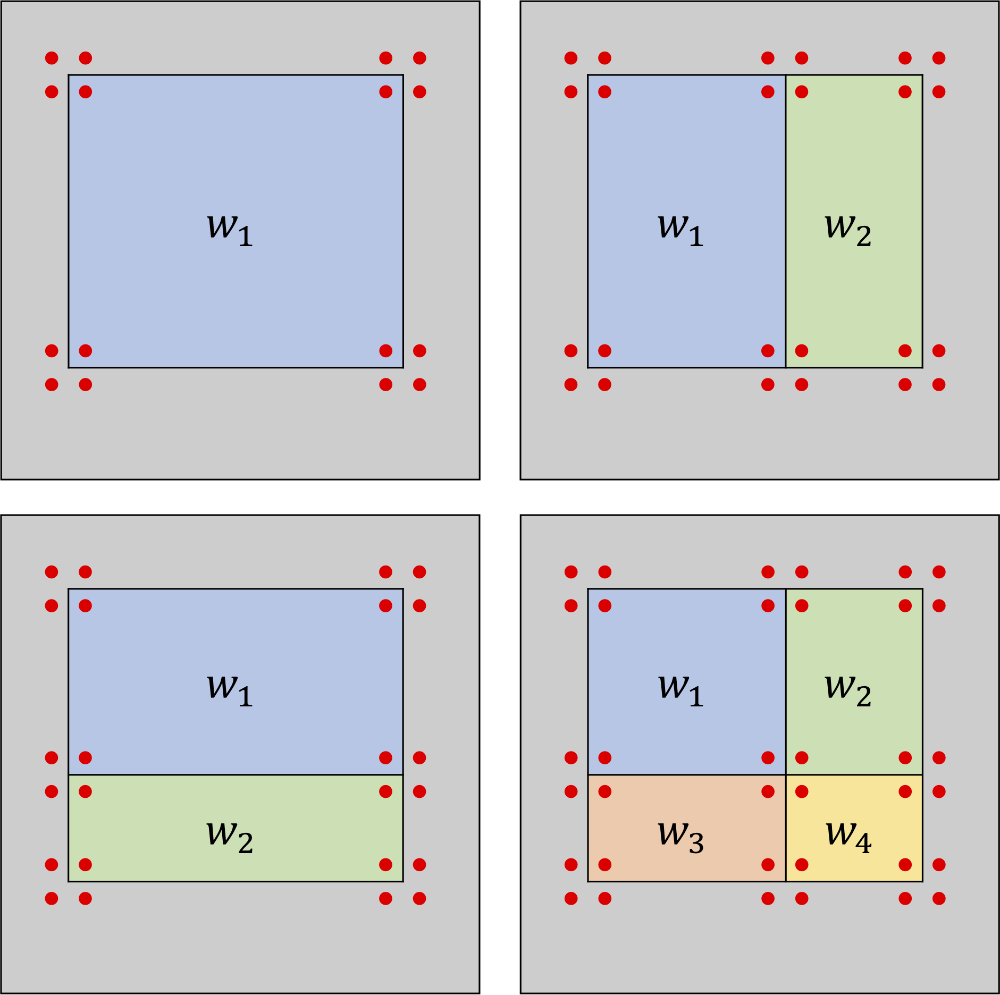
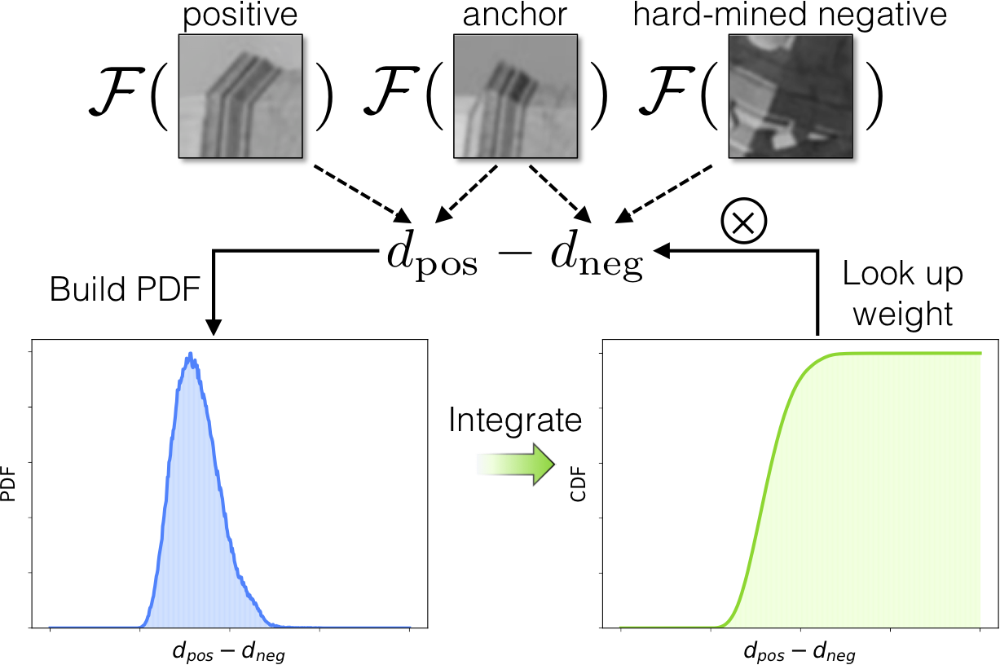
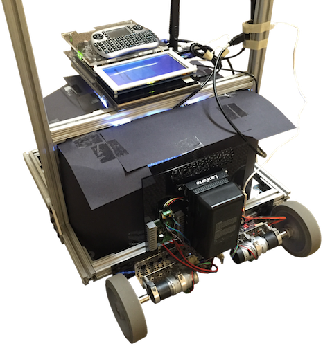
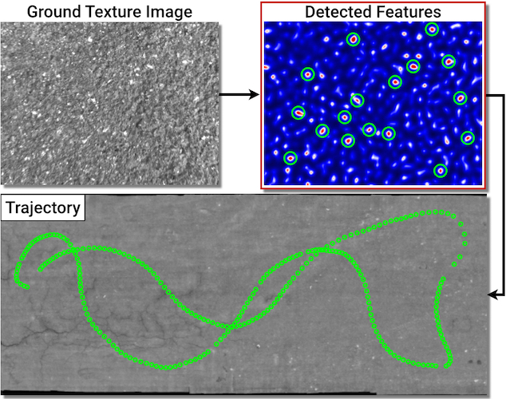
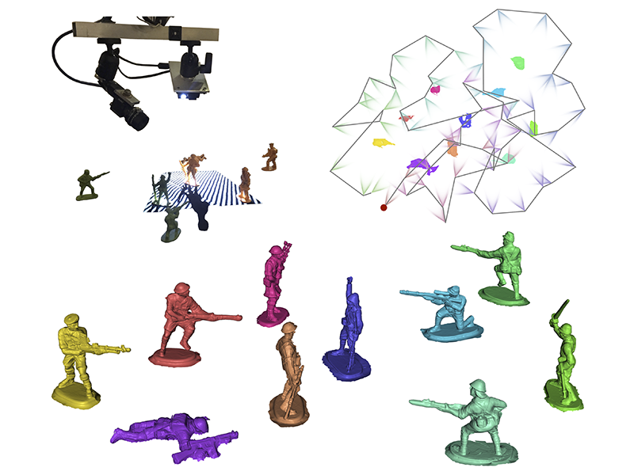
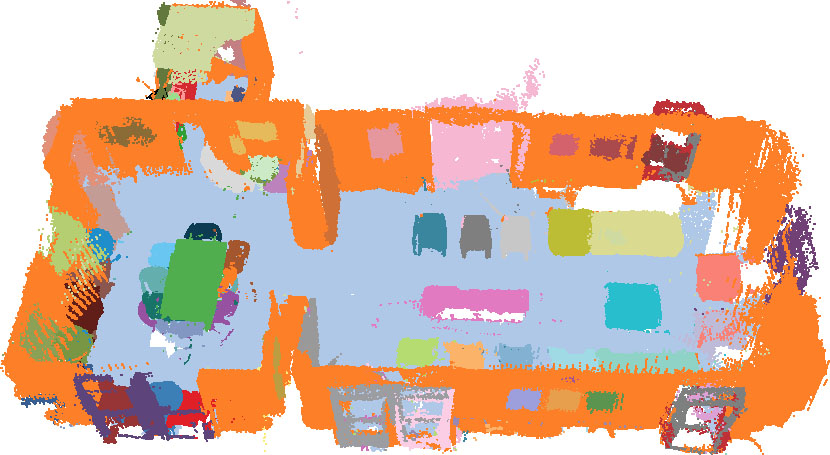
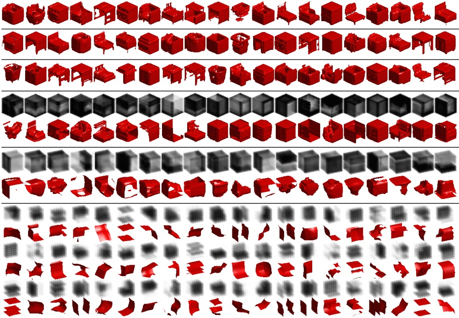

Linguang Zhang (張臨光)Ph.D. in Computer ScienceFacebook Reality Labs, Redmond, WA Email: '{}921@gmail.com'.format('zhanglg')
|
I am a research scientist at Facebook Reality Labs (Oculus). My research interests span the fields of computer vision, computer graphics and robotics. Before joining Facebook, I received my Ph.D. in Computer Science from Princeton University, where I worked with Prof. Szymon Rusinkiewicz. I was also a member of the Princeton ImageX Labs. I obtained my B.Eng in Computer Engineering from HKUST, where I was advised by Prof. Chi-Keung Tang.
We are hiring research interns for summer 2021! If you are interested, please email your resume to firstname@fb.com.|
Linguang Zhang |
|
|  |
Linguang Zhang, Maciej Halber and Szymon Rusinkiewicz |
|  |
Linguang Zhang and Szymon Rusinkiewicz |
|  |
Linguang Zhang, Adam Finkelstein and Szymon Rusinkiewicz |
|  |
Linguang Zhang and Szymon Rusinkiewicz |
|  |
Xinyi Fan, Linguang Zhang, Benedict Brown, and Szymon
Rusinkiewicz |
|  |
Shuran Song, Linguang Zhang, and Jianxiong Xiao |
|  |
Zhirong Wu, Shuran Song, Aditya Khosla, Fisher Yu,
Linguang Zhang, |
| Facebook Reality Labs (Oculus Research) | Research Intern, 2018 |
| NVIDIA - Visual Computing Research | Research Intern, 2016 |
| Intel - Visual Computing Lab | Research Intern, 2015 |
| Lenove Research HK | Intern, 2014 |
| DJI Innovations | Intern, 2014 |
| Princeton COS 426 - Computer Graphics | Teaching Assistant 2016 & 2018 |
| Princeton COS 402 - Artificial Intelligence | Teaching Assistant 2015 |
| HKUST COMP 1022P - Introduction to Computing with Java | Lab Assistant 2012 |
| HKUST COMP 1022Q - Introduction to Computing with Excel VBA | Lab Assistant 2012 |
| IROS | Reviewer 2020 |
| ICRA | Reviewer 2019, 2020 |
| ECCV | Reviewer 2018, 2020 |
| CVPR | Reviewer 2016 ~ 2019 |
| ICCV | Reviewer 2015, 2017, 2019 |
| AAAI | Reviewer 2020 |
| BMVC | Reviewer 2017, 2018, 2019 |
| ACCV | Reviewer 2016, 2018 |
| TVCG | Reviewer 2019, 2020 |
| TVCJ | Reviewer 2017, 2018, 2019 |
| Computers & Graphics | Reviewer 2017, 2018 |
| Frontiers of Computer Science | Reviewer 2019 |
| Academic Achievement Medal (Top 1% of the graduates) | HKUST, 2014 |
| Champion of the Best Final Year Thesis Award | HKUST, 2014 |
| Outstanding Students Award | HKUST, 2014 |
| HKSAR Government Talent Development Scholarship | Hong Kong, 2013 |
Last updated: